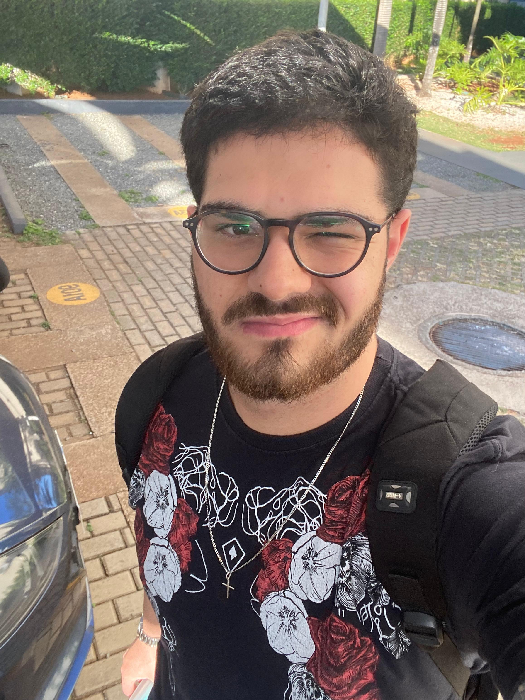
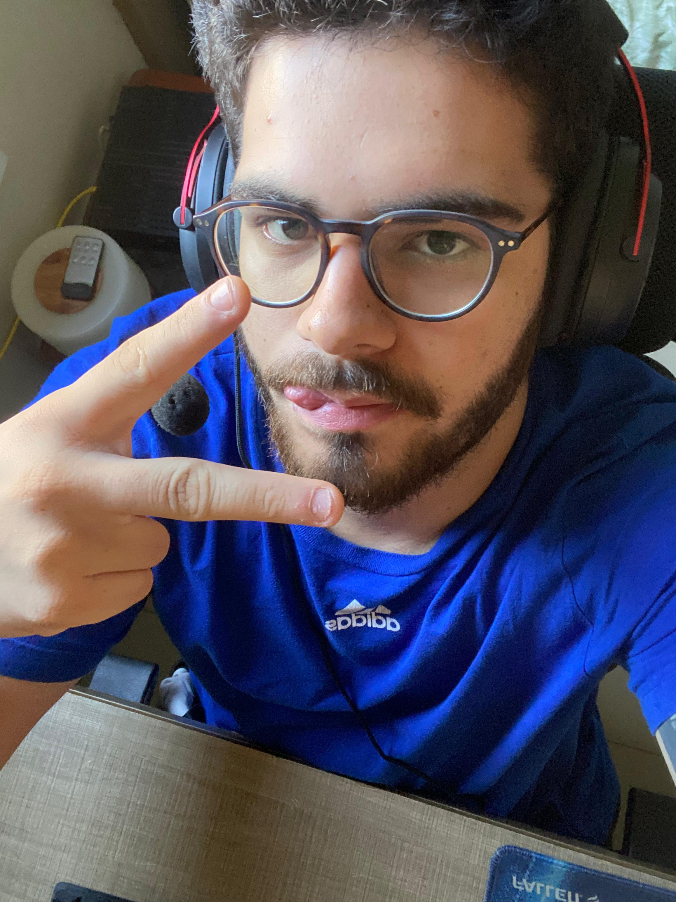
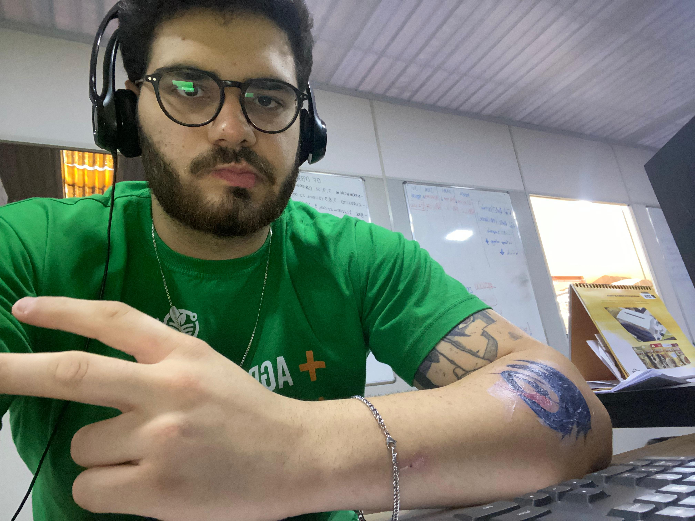
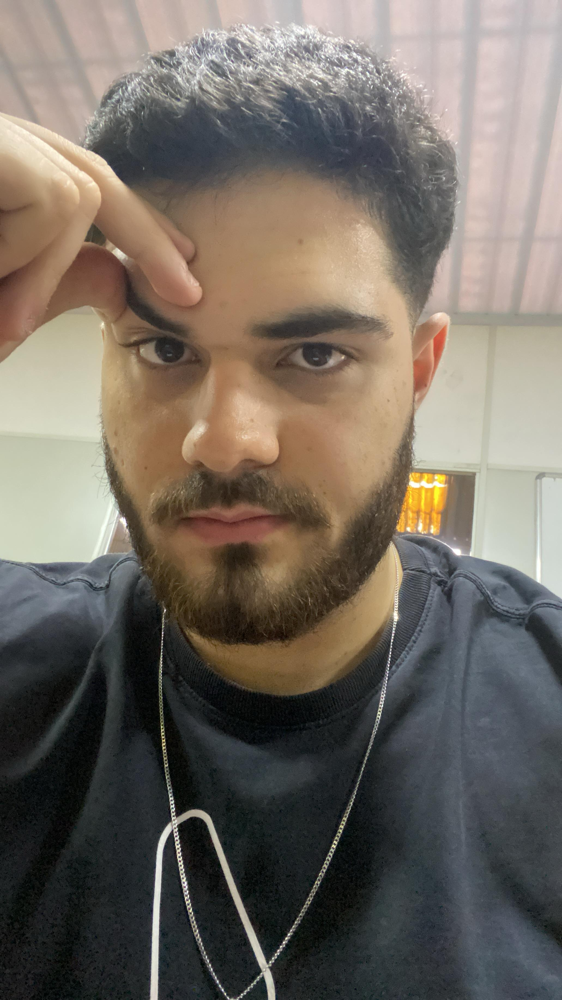
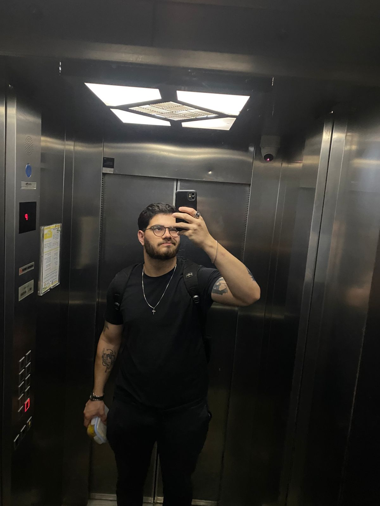

Hoje começa uma jornada especial: 365 cartas, uma por dia, todas dedicadas a você. Pequenas declarações que revelam o quanto você é importante pra mim. ❤️
Vamos lá... como é difícil começar a escrever uma carta pra você, sendo que o que eu mais queria hoje era estar aí do seu lado. Não precisávamos estar fazendo nada — só deitados juntos no sofá, mexendo no celular, mas juntos. ❤️
Ultimamente percebi que você anda um pouquinho mais calada. Não sei o que está passando aí dentro, mas já te falei uma vez e repito, meu amor: qualquer coisa, qualquer mesmo, que você precisar — se estiver ao meu alcance, eu vou te ajudar com o maior prazer.
Eu sei que esse é o seu jeitinho… guardar as coisas pra você, não querer incomodar, ter dificuldade de falar. Mas eu tenho certeza de que você desabafa com alguma amiga próxima. Um dia eu vou chegar nesse patamar com você também — de ser seu porto seguro, alguém com quem você se sinta confortável pra dividir tudo o que passa na sua cabeça.
Essa é só a primeira cartinha de abertura dessa série que estou fazendo. Espero que você goste dos próximos episódios e que, quando tudo isso terminar… a gente esteja juntos de verdade.
Eu te amo.
Com amor,
Lucas 🙂

ton futur mari ici
Hoje o dia foi muito bom, fiquei o dia todo com os menino aqui em casa, mas o engraçado é que em nenhum momento eu parei de pensar em voce kkkk, eu gosto muito de conversar com vc, vc nao tem nem noção disso. Acordei pensando em você, fiquei o dia inteiro lembrando dessa risada de autista sua kkkkkkkkk, e agora, antes de dormir, sinto que precisava colocar isso em palavras. ❤️
Cada pequeno detalhe do seu jeito faz falta: sua voz me chamando, sua risada quando acha graça de algo bobo, até mesmo aquele jeitinho que você tem de franzir a testa quando está concentrada.
Sei que tudo isso parece estranho, voce ta ai mo longe, e eu fica falando que "a um dia eu vou ai te ver, espere por mim, etc etc", mas pra mim, isso so e combustivel pra querer mais e mais que de certo, diria que esse momento exigem paciência, mas quero que saiba que você é uma pessoa que eu amo e faria MUITA coisa pra estar do seu lado. Você me faz querer ser melhor a cada dia. Espero que essa carta te abrace de longe e faça você se sentir um mulherão do carai que voce é.
Eu te amo. Dorme bem.
Com saudades,
Lucas ❤️

pour toi, mon amour
Domingo à noite...
Não fiz absolutamente nada hoje, mas o dia passou voando slk, sentindo muita dor no braço mas ta de boa, deitei ali para assisir um filme e lembrei de voce, era um filme de romance muito ruim vc nao tem ideia kkkkk, mas fala de uma mulher doida que viajava pra pedir o namorado em casamento. Eu to com um leve sentimento que vc vai esquecer da existencia dessas cartinhas e nem vai ler, mas independente se ler ou nao, escrever acaba sendo uma forma de deixar um pedacinho meu aqui. Vai que um dia você lê, né? 😅
Sei lá, às vezes bate aquele pensamento de "será que tô viajando demais?", mas aí eu lembro que prefiro ser alguém que sente do que alguém que passa pela vida fingindo que não sente nada.
Não tô aqui fazendo juras de amor eterno nem nada do tipo, mas tem algo em você que me prende a atenção — e isso não acontece com frequência. Então sigo escrevendo, mesmo que só eu leia. Meio como quem deixa uma garrafa no mar: pode ser que alguém encontre, pode ser que não... mas foi sincero. Te amo meu amor, desejo do fundo do meu coração que vc esteja bem.
Com carinho, do seu talvez futuro marido...
Lucas 🌇

le futur est à nous
Bom dia, meu amor!
Não sei a hora em que você está lendo isso, mas estou escrevendo pela manhã. Ontem, depois de cortar o cabelo, saí com os moleques para comer pizza. Slk, cheguei em casa estufado pra caramba kkkkkk.
Queria que você estivesse aqui comigo agora. Essa vontade louca de me encontrar com você aumenta a cada dia. Queria saber mais sobre você, mas você não fala nada, só fica dizendo "vai tomando" kkkkkkk.
Se prepara, porque quando a gente se encontrar, você não vai conseguir fugir das minhas perguntas não, ta? Nada de fazer que nem no WhatsApp!
Eu te amo, minha princesa. Sinto sua falta. Não vejo a hora de chegar aí e fazer você passar vergonha na Itália pedindo ketchup pra colocar na pizza kkkkkk, só pra ver a cara do garçom.
Brincadeira! Não vou fazer isso não... Mas algumas gracinhas têm que ter, né? Ainda mais com o nosso humor todo quebrado — vamos sair rindo de tudo por aí.
Com muito amor, ❤️
Lucas

ton futur mari ici
Não consigo tirar os olhos de você... sua beleza me encanta — acaba tornando-se impossível não admirar você. 💖
Às vezes eu paro e fico olhando suas fotos por um tempo. Seu sorriso, seu olhar, sua forma de se expressar… tudo em você parece ter sido feito sob medida pra me deixar bobo. E eu fico. Fico mesmo.
Você tem uma leveza que me prende. Um jeitinho que me acalma e, ao mesmo tempo, me deixa ansioso pra estar perto. Eu poderia escrever mil palavras tentando descrever como me sinto, mas nenhuma delas chegaria perto do que você causa em mim.
Talvez seja isso o amor — esse sentimento bom que a gente sente só de pensar na outra pessoa. Com você, até o silêncio tem significado. Até os dias mais comuns viram especiais quando penso em nós dois.
Eu te amo. Muito. Com tudo que tenho e com tudo que sou.
Sempre seu,
Lucas ✨

je ne vois que toi
Bom, como você não me responde mais, tá me ignorando por completo, decidi me afastar, mas não vou sumir, ainda estarei aqui, porque eu realmente gosto de você.
Não sei se você conheceu alguém aí, ou se só não vê sentido na gente, e tá tudo bem. Eu estava 100% disposto a te esperar, por todos esses anos, mas agora... vou seguir meu caminho.
Caso você leia isso — eu ainda te amo, eu ainda te quero. Fala comigo.
Pode ser que eu não tenha conhecido ninguém e aí voltamos a nos falar, e os planos que fiz com você voltem a ficar de pé... mas se você deomorar muito, pode ser também que eu já tenha conhecido alguém. Então é isso.
Continuo torcendo por você, sempre. Desculpa qualquer coisa.
Com carinho,
Lucas 🍃
Mano, cê nun tem ideia. Fui trabalhar hoje cedo e o carro não ligava de jeito nenhum. Fiquei uns 30 minutos tentando descobrir o que era, até que lembrei que tinha colocado álcool no tanque. Aí percebi que tava mais frio que o normal… descobri o motivo da zica, kkkkk.
Cheguei uma hora atrasado, pelo menos tinha cachorro quente de café da manhã, vai tomando kkkkkk.
Mudando de assunto… releva aquela carta anterior. Parei pra pensar e, pô, você tá aí do outro lado do mundo, e eu aqui falando besteira no WhatsApp.
É que eu gosto tanto de você, quero tanto que seja você… que toda vez que digo “eu te amo”, não é da boca pra fora.
Vem do fundo do meu coração — que brilha só pra você.
Sinto sua falta, minha japinha.
Com amor,
Lucas 🙂
Hâte de te voir un jour